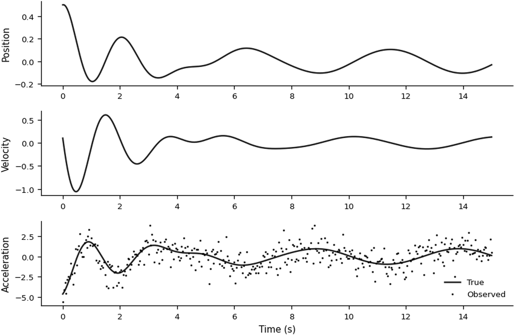
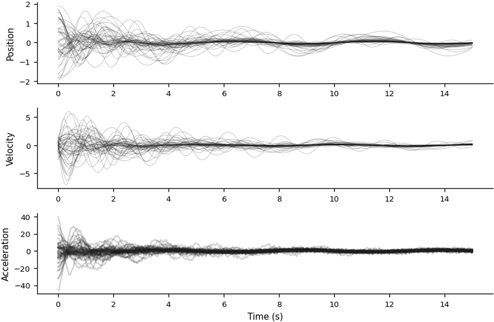
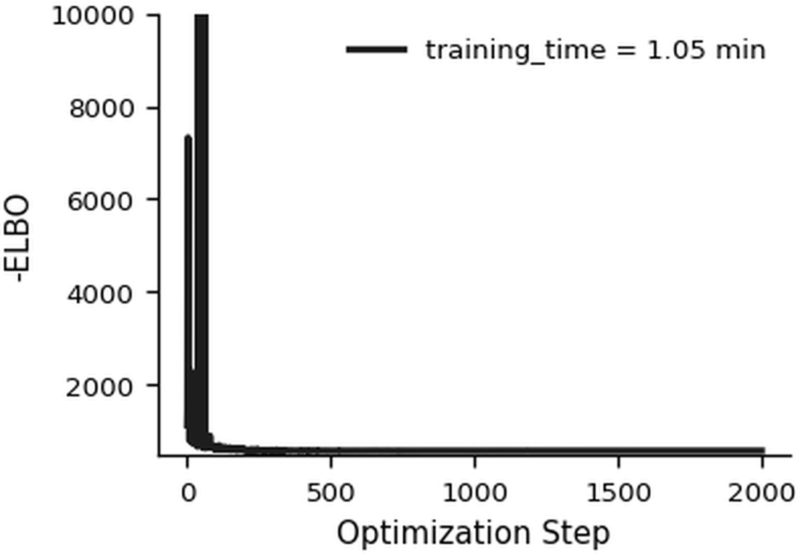
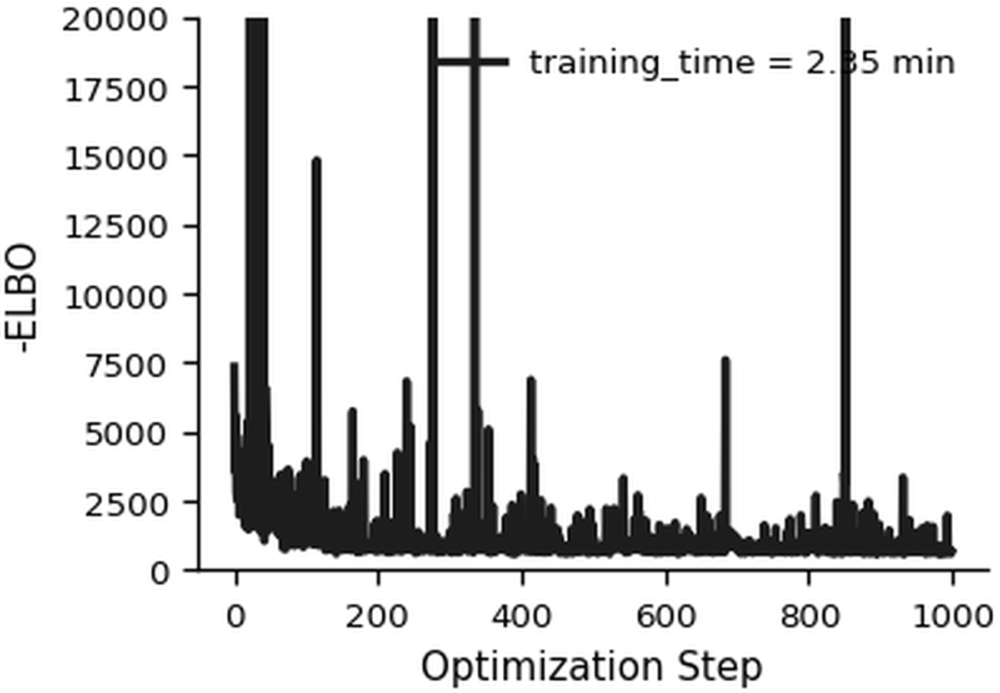
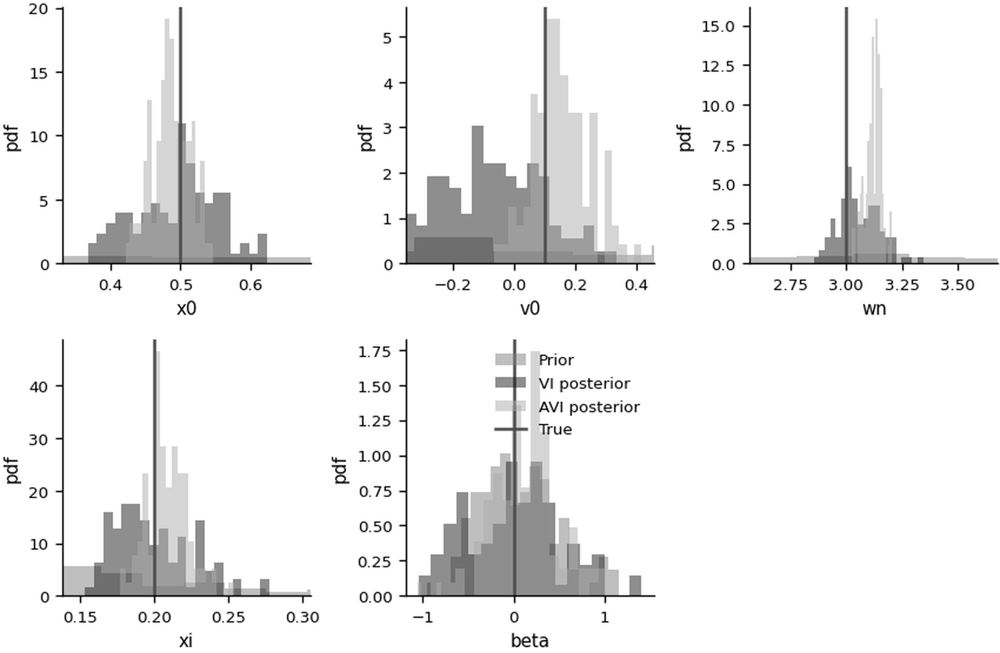
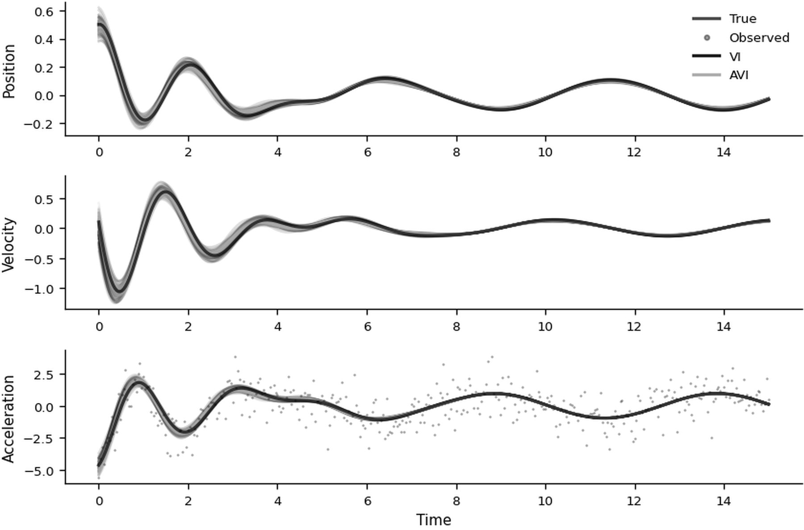

Example - A dynamical system with multiple observed trajectories#
We infer the parameters of a deterministic Duffing oscillator from multiple noisy trajectories. The equations of motion are
\begin{align*} \dot{x} &= v \ \dot{v} &= -2\xi\omega_n v - \omega_n^2 x - \beta x^3 + \gamma \sin(\omega t). \ \ x(0) &= x_0, \ v(0) &= v_0. \end{align*}
where \(x\) is the position, \(v\) is the velocity, and \(x_0\) and \(v_0\) are their initial values. The parameter \(\xi\) is the damping ratio, \(\omega_n\) is the natural frequency, and \(\beta\) is the nonlinear stiffness coefficient. The known external forcing is \(\gamma \sin(\omega t)\). The observations \(\mathbf{y}\) are acceleration measurements corrupted by additive Gaussian noise with known variance.
Our goal is to infer \(\mathbf{\theta} = (x_0, v_0, \omega_n, \xi, \beta)\) for a target system. AVI learns a global map from an observed trajectory to an approximate posterior over \(\mathbf{\theta}\). Training this map is expensive, but a new trajectory requires only a forward pass through the trained inference network.
We first implement the system dynamics.
# Duffing constants
class DuffingConsts(eqx.Module):
gamma: float = eqx.field(static=True)
omega: float = eqx.field(static=True)
# Vector field
def vector_field(t, y, args):
"""Duffing oscillator dynamics.
Args:
t: Current time
y: State [x, v]
args: (theta, gamma, omega) where theta = [x0, v0, wn, xi, beta]
"""
theta, gamma, omega = args
_, _, wn, xi, beta = theta[:5]
# Compute control input
u = gamma * jnp.sin(omega * t)
x, v = y[0], y[1]
return jnp.array([
v,
-2*xi*wn*v - wn**2*x - beta*x**3 + u
])
# ODE solver
solver = Heun() # more accurate and stable than Euler()
term = ODETerm(vector_field)
@jit
def solve_ode(theta: jnp.ndarray, ts: jnp.ndarray, consts) -> jnp.ndarray:
"""Solve Duffing ODE with given parameters and control input.
Args:
theta: Parameters [x0, v0, wn, xi, beta]
ts: Time points
consts: Excitation input constants, including gamma & omega
Returns:
xs: States (position and velocity) at time points
"""
gamma = consts.gamma
omega = consts.omega
x0, v0 = theta[0], theta[1]
saveat = SaveAt(ts=ts)
sol = diffeqsolve(
term,
solver,
t0=ts[0],
t1=ts[-1],
dt0=ts[1] - ts[0],
y0=jnp.array([x0, v0]),
args=(theta, gamma, omega),
saveat=saveat,
)
return sol.ys
# Observation function
def observation_duffing(theta: jnp.ndarray, xs: jnp.ndarray) -> jnp.ndarray:
"""Compute observation (acceleration) from states.
Args:
theta: Parameters [x0, v0, wn, xi, beta]
xs: States position and velocity
Returns:
acs: Accelerations
"""
_, _, wn, xi, beta = theta[:5]
acs = -2 * xi * wn * xs[:, 1] - wn ** 2 * xs[:, 0] - beta * xs[:, 0] ** 3
return acs
Problem Constants and Target System#
All simulated batches use evenly spaced measurements over a fixed 15-second window and the same sinusoidal excitation. The global settings are:
# Time parameters
t0 = 0.0
t1 = 15.0
dt = 0.04
ts = jnp.arange(t0, t1 + dt, dt)
t_len = len(ts)
# Control input constants
consts = DuffingConsts(gamma=0.8, omega=1.25)
# Observation noise parameter
sigma_meas = 1.0
# System parameters
list_theta = ['x0', 'v0', 'wn', 'xi', 'beta']
n_params = len(list_theta)
The target system uses the following parameters.
# Generate target trajectory
actual_theta = jnp.array([0.5, 0.1, 3.0, 0.2, 0.0])
print(
f"True parameters: "
f"x0={actual_theta[0]:.2f}, "
f"v0={actual_theta[1]:.2f}, "
f"wn={actual_theta[2]:.2f}, "
f"xi={actual_theta[3]:.2f}, "
f"beta={actual_theta[4]:.2f}"
)
# Solve ODE
target_xs = solve_ode(actual_theta, ts, consts)
# Compute noisy acceleration
target_obs = observation_duffing(actual_theta, target_xs)
target_obs = target_obs + jr.normal(key, target_obs.shape) * sigma_meas
True parameters: x0=0.50, v0=0.10, wn=3.00, xi=0.20, beta=0.00
The resulting target trajectory is shown below.

The acceleration observations contain substantial noise.
Formulation of the Problem#
Prior Definition#
We assign priors that encode plausible parameter scales. Lognormal priors enforce positivity for \(\omega_n\) and \(\xi\):
The following class evaluates and samples both types of prior distribution.
# Define prior on parameters
prior_types = (0, 0, 1, 1, 0) # 0 = Normal, 1 = LogNormal
prior_mus = jnp.array([0.0, 0.0, 1.2, -1.9, 0.0], dtype=jnp.float32)
prior_sigmas = jnp.array([1.0, 1.0, 0.3, 0.6, 0.5], dtype=jnp.float32)
prior = PriorSpec(type_code=prior_types, mu=prior_mus, sigma=prior_sigmas)
We next simulate trajectories using parameters sampled from the prior.
Divergent trajectories are excluded from visualization and training, so we generate about 30% more than n_trajectories and retain the requested number of stable trajectories.
The observation scale scale_obs is computed from these simulations and used later to improve numerical conditioning during training.
Below, we show the examples of hidden state trajectories (position and velocity) together with their corresponding noisy acceleration observations.

The prior produces varied stable behavior without being overly restrictive.
Guide Setup#
For the guide \(q(\theta)\), we use a multivariate Gaussian with full covariance. A transformation \(z = T(\theta)\) maps the constrained physical parameters \(\theta\) to unconstrained coordinates \(z\):
where \(L_{\phi}\) is lower triangular (Cholesky decomposition), parameterized by \({\phi}\), and \(J_T(\theta) = \frac{\partial z}{\partial \theta}\) denotes the Jacobian of the transformation from the constrained parameter space to the unconstrained space.
# Define constraint transform on guide parameters (parameterization)
constraint = ConstraintTransform(type_code=prior_types)
ELBO#
Standard VI maximizes the ELBO with respect to \(\phi\):
The implementation combines three terms:
\(p(\theta)\): the prior over system parameters (\(\theta\))
\(p(\mathbf{y} \mid \theta)\): the likelihood of the observed system trajectory (\(\mathbf{y}\))
\(q_{\phi}(\theta)\): the variational guide distribution, whose entropy discourages collapse to a point estimate
To estimate the likelihood term, we draw n_mc_samples reparameterized samples from the guide, solve the ODE for each parameter set, and compare the resulting trajectories with the observed data vector \(\mathbf{y}\).
Variational inference implementation#
The mode argument selects either standard VI for one target trajectory or AVI using a trained inference network.
Standard VI for the target system#
The baseline optimizes a separate variational guide using only the target trajectory.
# Run VI for target system
print("\n" + "="*50)
print("Running Standard VI")
print("="*50)
key, subkey = jr.split(key)
vi_guide, vi_elbo_history, vi_time = run_vi(
mode = "standard",
key = subkey,
obs = target_obs,
ts = ts,
consts = consts,
sigma_meas = sigma_meas,
prior = prior,
constraint = constraint,
n_steps = 2000,
n_mc_samples = 5,
learning_rate = 1e-2,
)
==================================================
Running Standard VI
==================================================
Step 100/2000, ELBO: -6.20e+02
Step 200/2000, ELBO: -5.88e+02
Step 300/2000, ELBO: -5.79e+02
Step 400/2000, ELBO: -5.76e+02
Step 500/2000, ELBO: -5.75e+02
Step 600/2000, ELBO: -5.76e+02
Step 700/2000, ELBO: -5.76e+02
Step 800/2000, ELBO: -5.74e+02
Step 900/2000, ELBO: -5.76e+02
Step 1000/2000, ELBO: -5.75e+02
Step 1100/2000, ELBO: -5.75e+02
Step 1200/2000, ELBO: -5.75e+02
Step 1300/2000, ELBO: -5.76e+02
Step 1400/2000, ELBO: -5.75e+02
Step 1500/2000, ELBO: -5.74e+02
Step 1600/2000, ELBO: -5.75e+02
Step 1700/2000, ELBO: -5.75e+02
Step 1800/2000, ELBO: -5.75e+02
Step 1900/2000, ELBO: -5.75e+02
Step 2000/2000, ELBO: -5.75e+02
The ELBO history is shown below.
array([<Axes: xlabel='Optimization Step', ylabel='-ELBO'>], dtype=object)

The loss decreases but has not fully stabilized. Additional optimization may improve the fit; posterior predictive trajectories are examined below.
Inference function for amortized VI#
AVI replaces separate guide parameters for each data set with a conditional guide \(q_{\phi'}(\theta \mid \mathbf{y})\). A neural inference network maps observations to the guide parameters. We train this network by maximizing an amortized evidence lower bound (AELBO), which averages the ELBO over trajectories drawn from the data-generating process:
Here, \(p(\mathbf{y})\) is the data-generating process, \(q_{\phi'}(\theta\,|\,\mathbf{y})\) is the guide produced by the inference network, \(p(\mathbf{y}\,|\,\theta)\) is the likelihood, and \(p(\theta)\) is the prior. We learn \(\phi'\) by maximizing this expectation over data sets \(\mathbf{y}\) drawn from \(p(\mathbf{y})\).
The inference network takes the observations as input and returns the mean and covariance parameters of the Gaussian guide. For an \(n\)-dimensional parameter vector, a lower-triangular Cholesky factor \(L\) has \(n(n+1)/2\) diagonal and off-diagonal entries.
# Inference function (with inductive bias)
class NeuralNetworkEncoder(eqx.Module):
"""
Class that represents the inference map from the data to the parameters.
Encodes a fixed-size input observational data into mean and cov outputs.
"""
hidden: list[eqx.nn.Linear]
mu_head: eqx.nn.MLP
cov_head: eqx.nn.MLP
priors_mu_theta: tuple[float, ...] = eqx.field(static=True)
priors_sigma_theta: tuple[float, ...] = eqx.field(static=True)
out_dim_mu: int = eqx.field(static=True)
out_dim_cov: int = eqx.field(static=True)
scales: float = eqx.field(static=True)
def __init__(self, key, t_len, last_hidden_dim, out_dim_mu, out_dim_cov,
hidden_layers=2, branch_depth=2, scales=None,
priors_mu_theta=None, priors_sigma_theta=None):
"""
Args:
key: Random key
t_len: Length of input sequence
last_hidden_dim: Dimension of the final hidden layer (trunk output)
out_dim_mu: Output dimension for mean
out_dim_cov: Output dimension for covariance matrix
hidden_layers: Number of hidden layers in trunk
branch_depth: Depth of branch MLPs
scales: Data standardization constant
priors_mu_theta: Prior means for output bias
priors_sigma_theta: Prior standard deviations for output bias
"""
keys = jr.split(key, hidden_layers + 2)
self.scales = scales
self.out_dim_mu = out_dim_mu
self.out_dim_cov = out_dim_cov
self.priors_mu_theta = (
priors_mu_theta if priors_mu_theta is not None
else tuple([0.0] * out_dim_mu))
self.priors_sigma_theta = (
priors_sigma_theta if priors_sigma_theta is not None
else tuple([1.0] * out_dim_mu))
# Trunk
self.hidden = []
prev_dim = t_len
for i in range(hidden_layers):
# dimension of the next layer
next_out_dim = int(
t_len * (hidden_layers - i - 1) / hidden_layers +
last_hidden_dim * (i + 1) / hidden_layers
)
# Append the layer
self.hidden.append(
eqx.nn.Linear(prev_dim, next_out_dim, key=keys[i]))
# update the dimension for next layer
prev_dim = next_out_dim
# Vectorized heads for mean and covariance parameters
self.mu_head = eqx.nn.MLP(
last_hidden_dim,
out_dim_mu,
width_size=last_hidden_dim // 2,
depth=branch_depth,
activation=jax.nn.silu,
key=keys[hidden_layers],
)
self.cov_head = eqx.nn.MLP(
last_hidden_dim,
out_dim_cov,
width_size=last_hidden_dim // 2,
depth=branch_depth,
activation=jax.nn.silu,
key=keys[hidden_layers + 1],
)
def __call__(self, x):
"""Process input through the neural network.
Args:
x: observations
Returns:
mean_output
covariance_output
"""
x = x.reshape(-1, 1)
# Standardize data if scales provided
if self.scales is not None:
x = x / self.scales
x = x.flatten()
# Process through trunk and branches
for layer in self.hidden:
x = jax.nn.silu(layer(x))
nn_mu = self.mu_head(x)
nn_cov = self.cov_head(x)
# Mean: prior mean as bias
mean_output = jnp.asarray(self.priors_mu_theta) + nn_mu
# Covariance: diagonal uses prior sigma, off-diagonal 0
n_diag = len(self.priors_sigma_theta)
n_off = self.out_dim_cov - n_diag
cov_bias = jnp.concatenate(
[jnp.log(jnp.asarray(self.priors_sigma_theta)), jnp.zeros(n_off)])
cov_mult = jnp.concatenate([2.0*jnp.ones(n_diag), 0.01*jnp.ones(n_off)])
covariance_output = cov_bias + cov_mult * nn_cov
log_diag = covariance_output[:n_diag]
off_diag = covariance_output[n_diag:]
# Clip to avoid instability
log_diag = jnp.clip(log_diag, jnp.log(1e-5), jnp.log(10.0))
covariance_output = jnp.concatenate([log_diag, off_diag])
return mean_output, covariance_output
We now specify the inference network. Its output is centered on the prior parameters, which provides an inductive bias at initialization.
# Construct inference model with specific architecture
key, subkey = jr.split(key)
inference_model = NeuralNetworkEncoder(
key = subkey,
t_len = t_len,
last_hidden_dim = 300, # Final hidden dimension of trunk
out_dim_mu = n_params,
out_dim_cov = n_params * (n_params + 1) // 2,
hidden_layers = 2, # Number of trunk layers
branch_depth = 2, # Depth of branch MLPs
scales = scale_obs,
priors_mu_theta = tuple(prior_mus.tolist()),
priors_sigma_theta = tuple(prior_sigmas.tolist()),
)
AVI Training#
Each AVI training step draws a new batch of trajectories, controlled by minibatch_size, and runs n_mc_samples forward ODE simulations for each trajectory. This computation should be run on a GPU.
We use \(1000\) training steps for this example.
# Train AVI inference model
print("\n" + "="*50)
print("Training AVI Model")
print("="*50 )
key, subkey = jr.split(key)
avi_model_trained, avi_elbo_history, avi_training_time = run_vi(
mode = "amortized",
key = subkey,
obs = None,
ts = ts,
consts = consts,
sigma_meas = sigma_meas,
prior = prior,
constraint = constraint,
inference_model = inference_model,
minibatch_size = 5,
n_steps = 1000,
n_mc_samples = 6,
learning_rate = 1e-4
)
==================================================
Training AVI Model
==================================================
Step 100/1000, ELBO: -1.35e+03
Step 200/1000, ELBO: -1.78e+03
Step 300/1000, ELBO: -9.64e+02
Step 400/1000, ELBO: -2.73e+03
Step 500/1000, ELBO: -1.65e+03
Step 600/1000, ELBO: -1.46e+03
Step 700/1000, ELBO: -1.21e+03
Step 800/1000, ELBO: -1.34e+03
Step 900/1000, ELBO: -8.33e+02
Step 1000/1000, ELBO: -6.47e+02
The AELBO history during training is shown below.
array([<Axes: xlabel='Optimization Step', ylabel='-ELBO'>], dtype=object)

The loss oscillates because every training step uses a newly simulated batch. More training data, optimization steps, or network capacity may reduce these oscillations at greater computational cost.
AVI for the target system#
The trained inference network produces guide parameters for the target trajectory in one forward pass.
# Run AVI Inference for target system
avi_mean, avi_L = avi_model_trained(target_obs)
avi_guide_params = jnp.concatenate([avi_mean, avi_L])
avi_guide = FullRankGaussianGuide(avi_guide_params, n_params)
The resulting guide is the AVI approximation for the target trajectory.
Comparison of VI and AVI#
We draw 100 samples from each guide in unconstrained space, transform them to the physical parameter space, and compare them with the generating parameters.
# Sample from posteriors
n_posterior_samples = 100
key, vi_key, avi_key, prior_key = jr.split(key, 4)
# VI samples in unconstrained space
vi_samples_uncon = vi_guide.sample(vi_key, n_posterior_samples)
# Map to constrained space
vi_samples = vmap(lambda z: z_to_theta(constraint, z))(vi_samples_uncon)
# AVI samples in unconstrained space
avi_samples_uncon = avi_guide.sample(avi_key, n_posterior_samples)
# Map to constrained space
avi_samples = vmap(lambda z: z_to_theta(constraint, z))(avi_samples_uncon)
# Sample from priors (in constrained space)
prior_samples = sample_theta_from_prior(prior, prior_key, n_posterior_samples)
The marginal guide distributions are compared with the prior below.

Samples from each guide induce the following reconstructed trajectories.

Standard VI reconstructs the target trajectory more accurately in this run, while AVI shows a larger discrepancy. AVI accuracy depends on the expressiveness of the inference network, the training distribution, and the optimization budget.
Standard VI reruns an optimization for every new trajectory. AVI shifts most of that cost to offline training, after which a new trajectory requires one forward pass through the inference network.